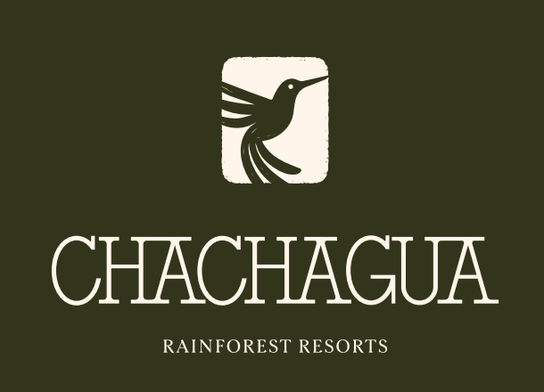
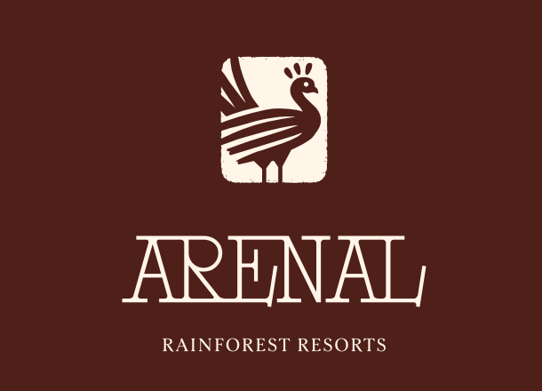

Costa Rica your way
Estimado socio de viajes:
La familia Rainforest Resorts reúne Chachagua Rainforest Resort & Hot Springs y Arenal Rainforest Resort. Dos bases para descubrir la región, con Travel Designers locales que ayudan a elegir alojamientos, experiencias y pausas según cada viajero. Para tus próximas propuestas de 2027, queremos compartir ideas que faciliten una conversación más precisa con tus clientes.
Una categoría para conocer de cerca
One Bedroom Vista Arenal forma parte de la propuesta de alojamiento de Arenal. Solicita las fotografías y características de la categoría o unidad disponible para las fechas de tu cliente. La imagen de esta edición muestra un detalle del baño; no acredita una vista desde cualquier habitación ni representa todas las categorías.
Conoce Arenal y consulta tu propuesta
Cuatro lecturas para diseñar la próxima estadía
Tres maneras de compartir el bosque sin llenar la agenda
Una caminata, yoga y café y cacao como punto de partida para una visita en pareja. Ideas para distribuir las experiencias y disfrutar también el tiempo entre una y otra.
Un viaje con amigos que deja espacio para cada ritmo
Canopy en Ecoglide, safari float en Peñas Blancas y Pocosol como alternativas externas. Una guía para conversar sobre intereses, habitaciones y logística antes de reservar para el grupo.
Del cacao al sendero: un bosque para descubrir en familia
Cómo elegir café y cacao, caminatas y aves según las edades e intereses de los hijos. La curiosidad funciona mejor con tiempo para preguntar y descansar.
Del bosque al paisaje del Arenal: seis noches, dos formas de viajar
Una idea editorial de tres noches por propiedad, con experiencias seleccionadas, traslado por cotizar y renovación de Arenal explicada con claridad. Sujeta a disponibilidad; no es un paquete publicado.
Dos experiencias para conversar con tus clientes
Bosque con acompañamiento. La caminata de naturaleza se realiza en Chachagua. Confirma recorrido, horario, exigencia y condiciones; para clientes de Arenal, coordina además acceso y traslado.
Otra perspectiva desde el canopy. Ecoglide se realiza en un parque externo en La Fortuna. Consulta requisitos del operador, disponibilidad, entradas y transporte desde cada resort. No está incluido automáticamente en la estadía.
Actualización operativa para 2027
Arenal Rainforest Resort está renovando sus alojamientos y áreas por etapas. Durante 2027 continuarán trabajos de construcción o remodelación dentro de la propiedad, que pueden generar ruido o cambios en algunas áreas y servicios. Las características y el estado de renovación varían según la categoría reservada. Antes de confirmar, solicita información vigente sobre la unidad, los trabajos y los servicios previstos para las fechas de tu cliente. La visibilidad del volcán depende del clima y de la ubicación específica.
Diseñemos la propuesta de tus clientes
Comparte fechas, número de viajeros y edades cuando corresponda, distribución deseada e intereses. Nuestro equipo podrá revisar categorías, experiencias y logística para preparar una propuesta. Las condiciones comerciales se confirman directamente; esta edición no anuncia tarifas, comisiones ni beneficios no aprobados.
Consulta Chachagua · Consulta Arenal
Rainforest Resorts · Costa Rica your way